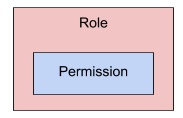
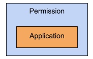

Auth0 APIs
The BDRC auth library uses two different auth0 APIs :
The Auth0 Management API and the Auth0 authorization extension API
The Auth0 Management API
As seen above, the Auth0 management API is used to request the Auth0 platform for tokens, for any authorized application defined in Auth0 (for instance LDSPDI or various Auth0 API extensions - BDRC uses Auth0 Management API Webhooks and Auth0 Authorization). It is also used for decoding and validating any provided token.
The Auth0 authorization extension API
The Auth0 authorization extension API is used to set up existing user profiles (i.e users created programmatically or through auth0 dashboard). Auth0 authorization extension API uses the following model:
Group:
A group may contain users, roles or other group(s). Any user belonging to a group inherits roles of that group and is a member of all nested groups, if any (then inheriting in turn of the roles of these groups).

Role:
Roles are associated with permissions and always apply to a single application. Therefore, a role can only have permissions pertaining to the application it is associated with.

Permission:
Permissions define the finest level of authorization. They are associated with a single application.

User:
A user may belong to several groups, inherit all roles of these groups and all permissions of these roles.
However, a user might also have specific roles that are not associated to a Group. This allows for assigning custom permissions to a specific user for specific applications.